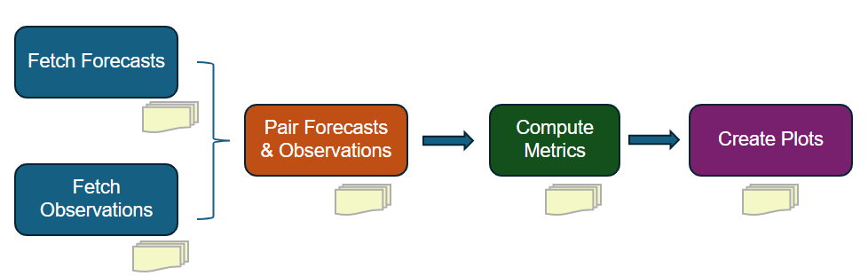

Workflow#
Process#
The evaluation/verification process includes five main steps, as illustrated in the figure below. Each step produces outputs that are used in subsequent steps. The workflow is designed to be flexible and modular, allowing users to customize the evaluation process based on their specific needs and data availability.
{kind=link}

Steps in the verification workflow. Each step produces outputs that are used in subsequent steps.#
Steps#
- Fetch Streamflow Forecast or Simulation Data
In this step, model simulation data are retrieved from different sources as specified by
nwm_forecast.data_sourcein the YAML configuration file. Currently supported data sources include:ngenCERF
Streamflow simulations from a single forecast for a single location are retrieved from a csv output file produced by running ngen with forecast forcing and a calibrated formulation. This evaluation mode is designed to facilitate the formulation selection process.
ngenSIM
Streamflow simulations for all gaged locations in a VPU are retrieved from a NetCDF output file produced by running NGEN with historical forcing (e.g., AORC) and regionalized formulations over a VPU.
hindcast
Streamflow simulations from multiple forecasts for a single location are retrieved from csv output files produced by running ngen with forecast forcing and a calibrated formulation. This evaluation mode is designed to facilitate hindcast verification.
GCS
Operational NWM streamflow forecast data are downloaded based on the specified configuration, versions, and time periods defined in the YAML configuration file. The data are then extracted for the designated locations. nwm-verf leverages the Python library TEEHR (Tools for Explanatory Evaluation in Hydrologic Research) to retrieve operational NWM forecasts from Google Cloud Storage (GCS) and store them as Parquet files in the TEEHR data model.
⚠️ This step can be highly resource-intensive and time-consuming.
- Fetch Streamflow Observation Data
In this step, streamflow observations are downloaded for the specified time periods and locations as defined in the YAML configuration file. Currently, only USGS streamflow observations are supported.
- Pair Observations with Forecast/Simulation Data
Next, streamflow forecasts are paired with corresponding observations based on validation time and location. This step requires both forecast and observation datasets to be fully downloaded and processed in the preceding steps.
- Compute Evaluation Metrics
After forecasts and observations are paired, performance evaluation metrics specified in the YAML configuration are computed. The calculations operate on the paired datasets generated in the previous step. Depending on the forecast data source, metrics are computed differently with respect to lead time:
- GCS / hindcast
Metrics are computed separately for each lead time (including aggregated lead times, e.g., “1-5” hours) according to the configuration.
- ngenCERF
Metrics are computed by aggregating across all lead times within the forecast window. That is, all forecast values, regardless of lead time, are pooled to produce a single set of metrics.
- ngenSIM
Metrics are computed from simulation data pooled over the specified evaluation window (using a single lead time of 0 hours).
- Generate Visualization of Metrics
In the final step, plots are created for the lead times and metrics specified in the YAML configuration file. Depending on the selected forecast data source, different types of plots are generated to effectively visualize the evaluation results:
- GCS and ngenSIM (larger-scale analyses)
Spatial maps: displaying geographic patterns in forecast performance
Histograms: illustrating the distribution of metric values
Boxplots: summarizing metric variability across different conditions
- ngenCERF (single-location analyses)
Time series: comparing time series of streamflow from NGEN forecasts and observations over the forecast window
Bar chart: displaying various metric values as individual bar charts
Metric table: displaying metric values in tables, grouped by metric category
- hindcast (single-location analyses with multiple forecasts)
Time series: comparing time series of streamflow from NGEN forecasts and observations for selected lead times and reference times (i.e., T0s)
Bar chart: showing how metric values change with lead time across multiple forecasts
Metric table: displaying metric values in tables for selected lead times and metrics
Note: for a specifc evaluation run, certain steps may be skipped if the necessary outputs from those steps are already available from previous runs. For example, if you have already downloaded the necessary forecast and observation data, you can skip the first two steps and start directly from the pairing step. Similarly, if you have already computed the evaluation metrics, you can skip directly to the visualization step. This flexibility allows users to efficiently manage their evaluation workflow based on their specific needs and data availability.
Example Configuration to skip data download/pairing and directly compute metrics and generate plots from existing paired datasets:
general:
steps: # define which of the 5 steps to run; each step can be run independently,
fetch_fcst_data: false
fetch_obs_data: false
pair_data: false
compute_metrics: true
plot_metrics: true